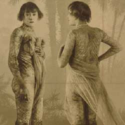

|
| Home | Talent | Cosmetic | Deformity | Abnormal | Ethnological |
Skin
Skin is a, no pun intended, touchy subject today as many people are trying to rid themsleves of imperfections, like acne or wrinkels. No one wants to feel like someone is stairing at their imperfect skin, so it is especially unfortuante that someone with rigid of burned skin would be put on display for the public to gawk at. The image on the left shows a girl with wrinkeled skin, who was made to disrobe in front of an audience so that they can see her skin better.
|